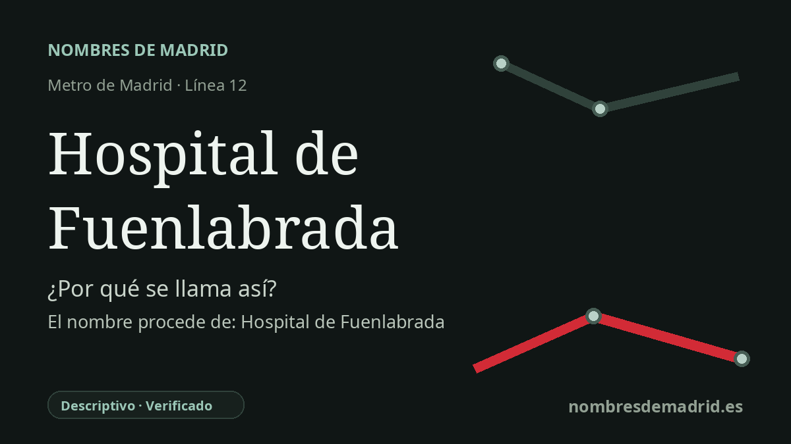

Publicado el · Investigación de Nombres de Madrid · Cómo verificamos cada origen · 7 fuentes consultadas
Respuesta rápida
La estación toma su nombre del Hospital Universitario de Fuenlabrada, situado junto a sus accesos del Camino del Molino. MetroSur abrió en 2003, poco antes de que el hospital comenzara a atender pacientes en 2004.
La historia del nombre
El nombre **Hospital de Fuenlabrada** es descriptivo. Orienta a los viajeros hacia el Hospital Universitario de Fuenlabrada, un centro público situado junto al ámbito de la estación, en el Camino del Molino, cerca del campus de la Universidad Rey Juan Carlos.
La institución que hay detrás del nombre nació para atender a Fuenlabrada y a municipios próximos del sur de la Comunidad de Madrid. La historia oficial del hospital explica que la población de Fuenlabrada era atendida antes en el Hospital Severo Ochoa de Leganés y presenta a la ciudad como la única gran ciudad española que no tenía hospital propio en aquel momento.
La cronología administrativa y constructiva está muy ligada a la apertura de la estación. En 1998, el INSALUD decidió crear el hospital; las obras comenzaron en 1999 y finalizaron en 2003. La Comunidad de Madrid creó el Ente Público Hospital de Fuenlabrada mediante la Ley 13/2002, de 20 de diciembre, y sus estatutos fueron aprobados por decreto el 26 de diciembre de 2002.
El metro llegó primero. MetroSur, la línea 12, se puso en servicio el 11 de abril de 2003, y la documentación de la Comunidad de Madrid sitúa la estación Hospital de Fuenlabrada en el Camino del Molino. El hospital inició su actividad en enero de 2004 con consultas externas, abrió las urgencias en junio de 2004 y funcionaba plenamente durante 2005.
No hay indicios de que la estación conmemore a una persona, un santo, un acontecimiento o un topónimo antiguo. El matiz principal es terminológico: el transporte público mantiene el nombre breve Hospital de Fuenlabrada, mientras que la institución sanitaria se presenta hoy oficialmente como Hospital Universitario de Fuenlabrada.